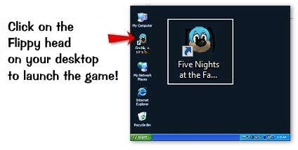

Hey! While you're here, want to see some pure nostalgia from Disney's Toontown Online?
Check out this channel,
Toontown Nostalgia
. This channel features old Toontown content like commercials, gameplay videos and more!

Game refusing to launch?
Download Panda3D 1.8.1
(Direct Download)
Download
Version 1.1.4 as of 07/31/15
To get started, follow these easy steps:
1.
Download the installer by clicking the button above.
2.
Click "Save" to save the file to your computer.
3.
When the download is complete, double click the installer icon to start the
installation process.
Supported Operating Systems
Windows XP
Windows 7
Windows 8/8.1
Windows 10